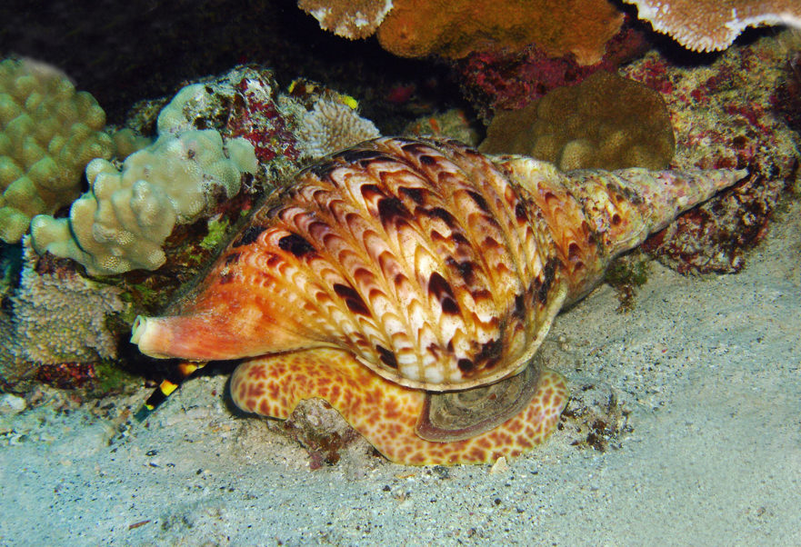
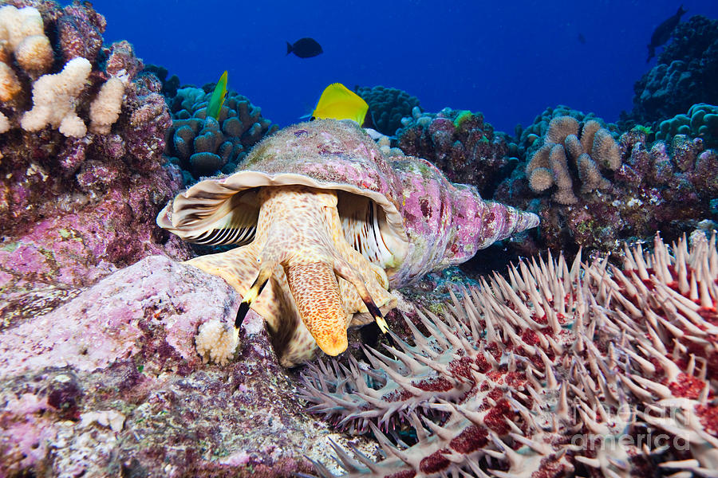

Giant Triton
These giant sea snails play a vital role in protecting our Reef.
Kingdom
Animalia
Phylum
Mollusca
Class
Gastropoda
Order
Littorinimorph
Family
Charoniidae
Genus
Charonia
Description
The giant triton is a sea snail, with a large, spindle-shaped shell that is usually white and yellow/brown in colour. These snails can reach up to around 2ft, making them one of the largest mollusc species in the world. They are famously known for being able to eat the venomous Crown-of-Thorns Starfish.
Habitat and Diet
Giant tritons are found in the Indo-Pacific Oceans, including the Red Sea. They reside in coral reefs.
These large sea snails are known to sense and give chase to their prey, consisting of starfish (including the infamous crown-of-thorns starfish) and other molluscs. Though starfish can detect and run from incoming prey, tritons are faster. Once the triton has grabbed its prey with its muscular foot, it uses its serrated radula to tear through skin and release paralysing saliva. From then, the triton feeds slowly. With smaller prey, the triton will swallow it whole, spitting out unwanted parts later.
A giant job
Crown-of-thorn starfish are a great threat to coral reefs, specifically the Great Barrier Reef. Australian Institute of Marine Science has shown that, over the last 30 years, coral cover in surveyed areas of the Reef has declined by 50%, half due to crown-of-thorn starfish. In fact, researchers estimated that, without these predator starfish devouring coral, there would have been a net increase in average coral cover.
Being one of the few successful predators of these starfish, the Giant Tritons are now being bred through a federal government-funded project. This way, they can try to reduce the crown-of-starfish population naturally and restore the reef.
Giant Triton facts
1.
Fossilised giant tritons have traced the species back to 145 million years ago.2.
The giant triton gets its name from Triton, the son of Greek God Poseidon, who used a triton shell as a trumpet.3.
Though the giant triton is a protected species in Australia, it can be legally traded around the rest of the world.4.
Giant tritons will often eat smaller prey whole, not bothering to paralyse them.Behaviour and Reproduction
Giant tritons are not hermaphroditic—they have two separate sexes and reproduce through internal fertilisation. Female tritons lay their larvae in white capsules. These larvae then enter a plankton stage for three months.
Threats
Giant triton’s shells are highly desirable trading pieces, often used for decoration or as tourist gifts. Due to the commercial harvesting this entails, the triton population has dropped significantly. This has led to an influx in other species, such as the coral-eating crown-of-thorn starfish.